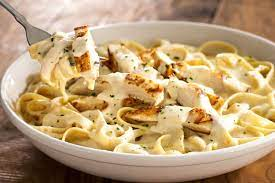

The Ingredients
- Garlic puree
- Butter (salted or unsalted)
- Heavy Whipping Cream
- Grated fresh Parmesan Cheese
- Salt and Pepper
- Fettuccine pasta
Directions
- In a medium saucepan, melt butter and brown the garlic puree
- Whisk the heav whipping cream to the browned garlic
- Once the butter and cream start to bubble, add the freshly grated Parmesan cheese and salt & pepper
- Stir on medium heat until the cream mixture starts to thicken.
- In a separate pot, follow the instructions to make your pasta
- Combine the pasta with the alfredo sauce
- Enjoy!